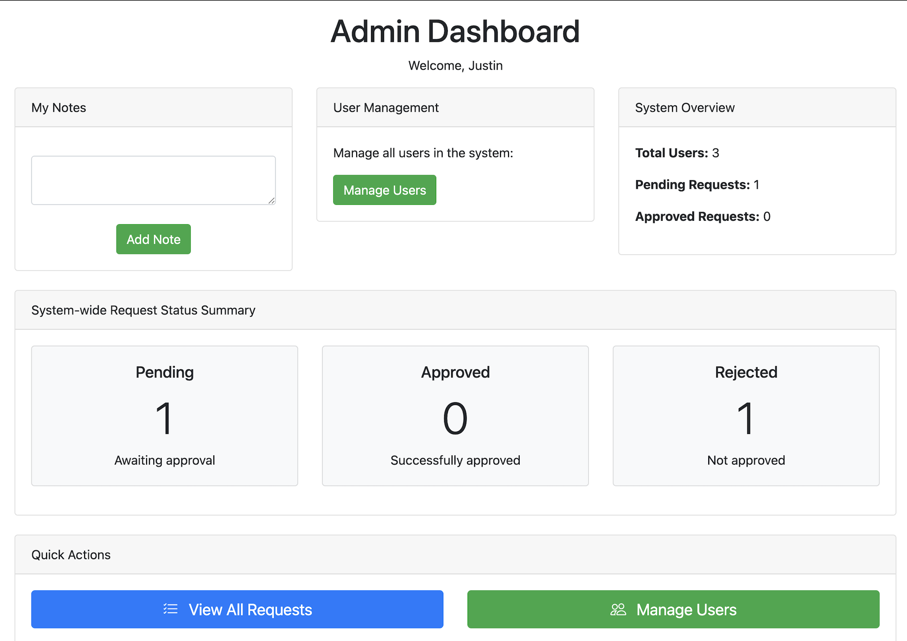
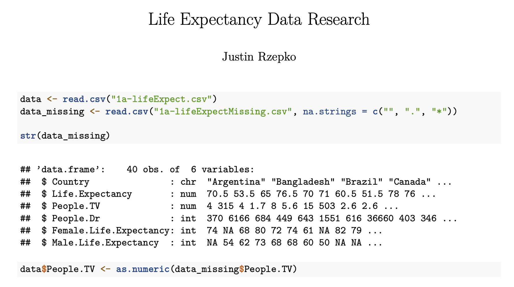

Languages
 Python Primary
Python Primary- SQL
 Java
Java R
R
Hi, I'm
Interested in
CS graduate with a mathematics minor, building skills and projects in data engineering, software development, and machine learning.
Designing ETL pipelines and data workflows that reliably move and transform data at scale.
Full-stack APIs and backend systems built with clean architecture and solid foundations.
Applying statistical models and ML techniques to extract patterns and insights from complex data.
Recent CS graduate with a mathematics minor, passionate about turning data into something meaningful. I'm actively building skills and projects in data engineering, software development, and machine learning.
Competitive 1:1 mentorship with a Google SWE. Focused on DS&A, pair programming, and code reviews.
Automated MSP workflows with Python and Power Automate, cutting per-request task time by 3–6 minutes.
CS TA for undergraduate courses — labs, office hours, grading, and targeted coding feedback.

Internal tool to submit, triage, and track service requests with role-based dashboards and real-time analytics.
